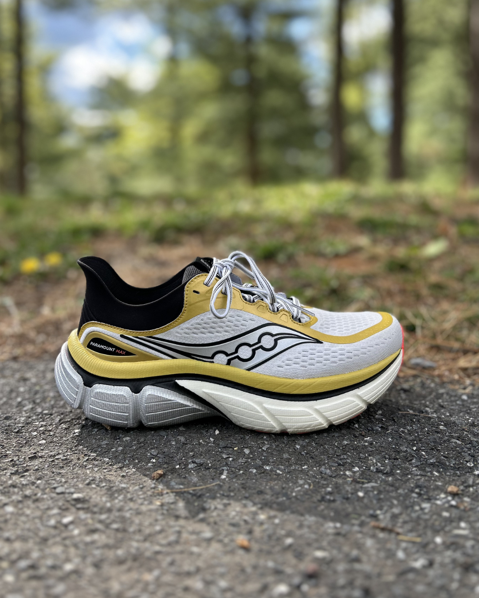
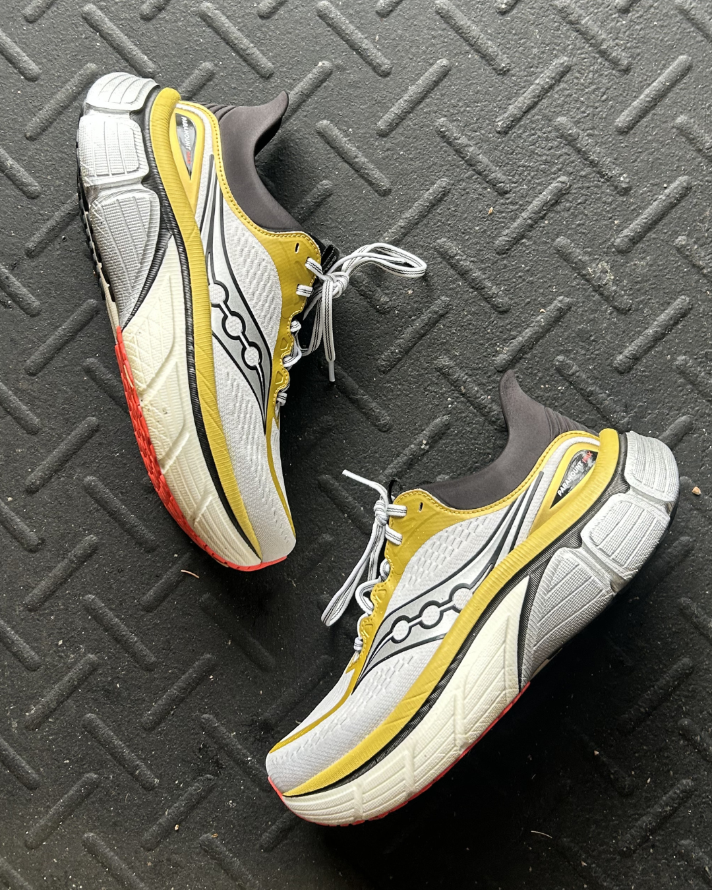

Buy If
You want a highly cushioned, stable, and bouncy trainer for easy runs, recovery days, and relaxed long runs.

Maximum comfort, massive bounce, and premium foam—but is this $200 cruiser versatile enough?
Back to ShoesSaucony has built one of the deepest road running lineups in the industry, and the Paramount Max takes a different approach than many of its siblings. Instead of chasing speed or trying to become the next super trainer, this shoe is focused on one thing: maximum comfort.
Built around Saucony's new IncrediRUN foam and a high-stack platform, the Paramount Max is designed to make easy miles, recovery runs, and long efforts feel as effortless as possible. It's a shoe that prioritizes protection over pace, offering a soft, stable ride for runners who simply want to log comfortable miles.
But with a $200 price tag, does the comfort justify the premium?
Let's find out.

The Saucony Paramount Max is all about comfort. The new IncrediRUN foam delivers a soft, bouncy cruiser that also surprised me with how stable it feels. For such a high-stack shoe, I expected it to be a little tippy, but Saucony did a nice job creating a stable platform.
This shoe thrives during easy runs, recovery days, and relaxed long runs where the goal is simply to protect your legs and enjoy the miles.
The upper is plush and comfortable with a secure, true-to-size fit.
If your priority is comfort, easy miles, and a fun, bouncy ride, the Paramount Max delivers.
The Paramount Max delivers one of the most fun max-cushion rides I've tested this year. The IncrediRUN midsole is incredibly bouncy while still feeling surprisingly stable thanks to the wide platform and higher sidewalls. It provides excellent protection for long runs and leaves your legs feeling fresh afterward.
The upper is plush and comfortable with a secure true-to-size fit, and the outsole has been impressive with solid grip and very little wear—even on the areas of exposed foam—after 35 miles.
If your priority is easy miles, recovery runs, or long runs and you love to bounce, this shoe is great for that.
This is one of the most comfortable shoes all around. The molded heel gives you structure but doesn't create any friction or restriction. The underfoot feel is crazy soft, yet somehow stable, for a plush underfoot ride. All in all, it's a premium feel for your foot.
Anyone who's run in IncrediRUN knows how bouncy and squishy it can be. The rebound that comes from compressing the foam is next level.

This is not the lightest shoe in the world.
On paper, 10.6 oz doesn't sound particularly heavy, but the longer I spent in the shoe, the heavier it started to feel. The combination of the wide platform and the way Saucony shaped the midfoot leaves the shoe feeling a bit bulky during longer runs.
With a max-cushion shoe, I want something that can comfortably handle double-digit runs while keeping my legs feeling fresh. Instead, by the end of those longer efforts, my legs actually felt heavier than I expected.
Then there's the price. At $200, the Paramount Max enters premium territory. For a shoe without a plate—and one that I don't consider a true super trainer—that price is difficult to justify.
The biggest drawback is the weight. At around 10 ounces, it never feels sluggish at easy paces, but it does feel bulky when trying to pick up the pace. Trimming some weight and reshaping the midsole might make it a more versatile trainer.
For a shoe that uses Saucony's elite-level racing foam, I hoped it would be able to handle not only long runs but also some speed work.
Another feature that gave me pause was the heel design. It takes inspiration from the Endorphin Elite, but this isn't a racing shoe. Instead of going with something more plush like the rest of the upper, it feels sleek and slightly out of place.
Finally, there's quite a bit of overlap with the Triumph 24 in Saucony's lineup, which is also a plush and premium trainer.
Any performance-oriented shoe in my mind needs to be light. The Paramount Max was described to me as a super trainer with maximum energy return. While that's true from an energy-return standpoint, the weight makes it hard to pick up the pace as much as I would like.
I also feel like the geometry of the midsole could have been more aggressive, which would have created a more pace-versatile experience. While the foam rebounds the more you put into it, the faster paces aren't what I would describe as effortless.
If your goal is maximum comfort with a fun, bouncy ride, and you don't mind spending the money, the Paramount Max is a solid option.
However, if you're looking for one shoe that can handle easy runs, long runs, workouts, and everything in between, I think there are more versatile options available for the same price.
The Paramount Max knows exactly what it wants to be—a comfortable cruiser—and it does that job well. I just wish it offered a little more versatility for the money.
The Saucony Paramount Max is a highly protective, energetic cruiser that brings race-inspired foam to everyday training.
While I'd like to see it lose a little weight and separate itself more from the Triumph, it's still one of my favorite shoes for easy and long runs right now.
If your goal is maximum comfort with a fun, bouncy ride, the Paramount Max is an excellent choice.
The shoe is fun, comfortable, and decently versatile, but there are a few things that hold it back for me. Specifically, the weight and geometry take one of the crazier foams on the market and make it a little tamer than I would like.
If we're talking super trainer, I feel the formula is simple: take a crazy foam, put it in an aggressive geometry, and make it light. The Paramount Max isn't bad by any means, but it feels like it could have been really great and didn't fully capitalize on its potential.
For me, no.
The biggest thing holding this shoe back is its lack of versatility. It excels as a comfortable cruiser for recovery runs and slower long runs, but that's a pretty narrow role for a $200 shoe.
If Saucony had priced it closer to $170–180, I'd have a much easier time recommending it. At $200, I think there are simply better all-around options that give you more value for your money.
If you're looking for a premium max-cushion shoe for easy miles and long runs, I think the Paramount Max offers decent value for the amount of cushion. The ride is unique, durability has been great so far, and the IncrediRUN foam gives it a lively feel that stands out from many other cushioned trainers.
However, runners wanting one shoe to handle everything may find better value in a more versatile option like the Superblast 3.
For me, unfortunately, no.
The $200-and-above price point is reserved for shoes that are either mind-blowingly fun or crazy fast. While the Paramount Max is fun, I believe there are other shoes in the category that are more fun and more versatile.
For most runners, this will be a recovery and premium daily option rather than a true long-run or all-around shoe, which makes it feel like it should be priced $20–30 cheaper.
You want a highly cushioned, stable, and bouncy trainer for easy runs, recovery days, and relaxed long runs.
You want one lightweight, versatile shoe for easy miles, long runs, workouts, and faster efforts—or you expect more at the $200 price point.